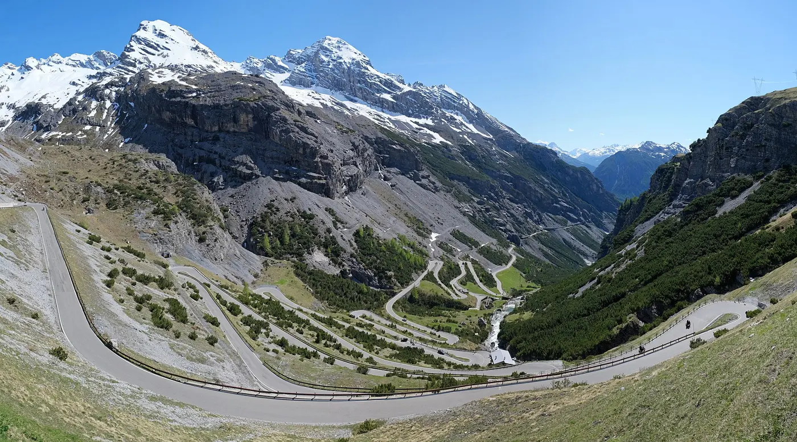

Веломаршруты всего мира
Куда поехать на велосипеде?
Легендарные перевалы, многодневные походы вдоль рек, горы Алматы и озёра Бурабая — на одной карте. Добавляйте свои маршруты и рассказывайте о поездках.
36 маршрутов34 стран7 типов поездок
Карта маршрутов
Открыть каталог с фильтрами →Нажмите на линию или точку, чтобы открыть маршрут. Линии схематичные, не для навигации.
Казахстан
Все маршруты Казахстана →Легендарные подъёмы
Все шоссейные →Большие путешествия
Байкпакинг и туринг →Для всей семьи
Все семейные →Маршруты и рассказы велосипедистов
Все рассказы →Знаете хороший маршрут?
Загрузите GPX с велокомпьютера или нарисуйте линию на карте, добавьте фото и советы. После проверки модератором маршрут появится в каталоге.